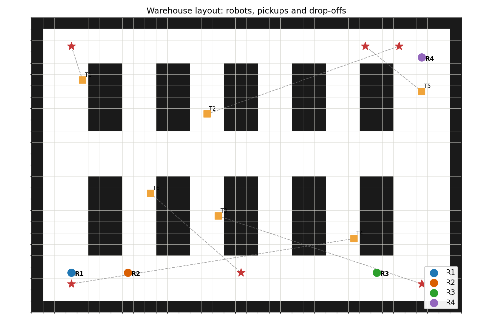
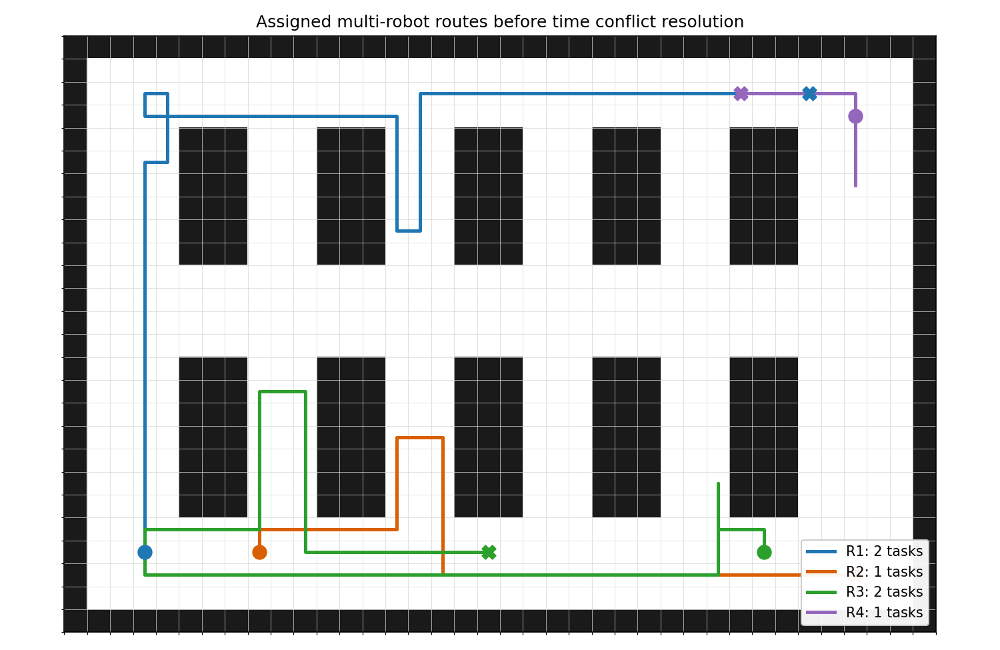
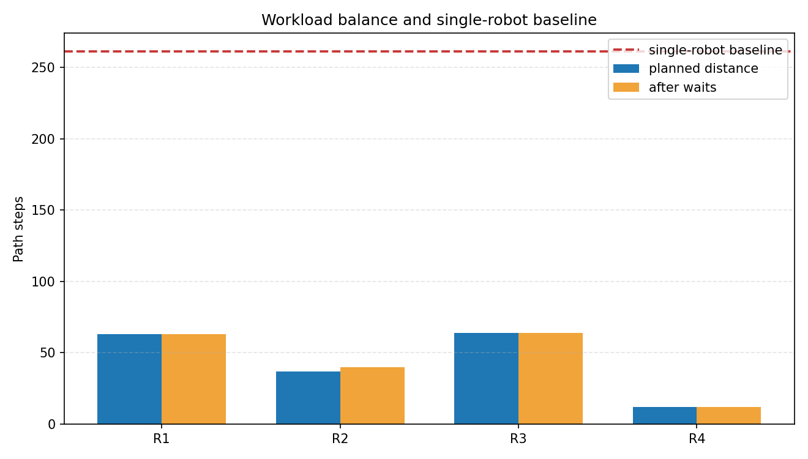
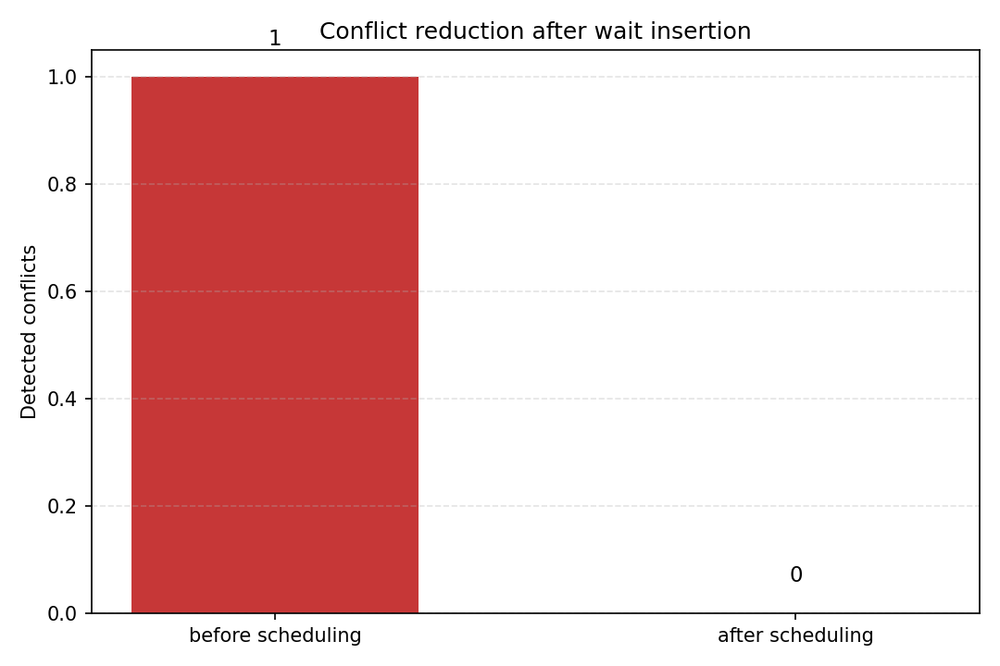
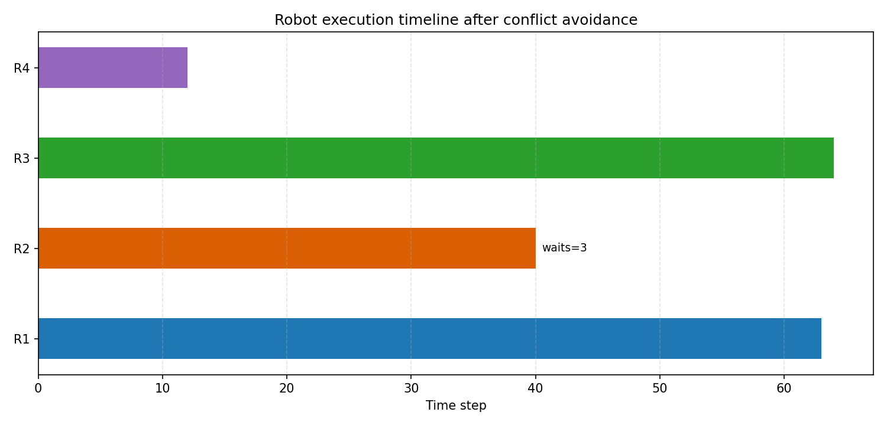
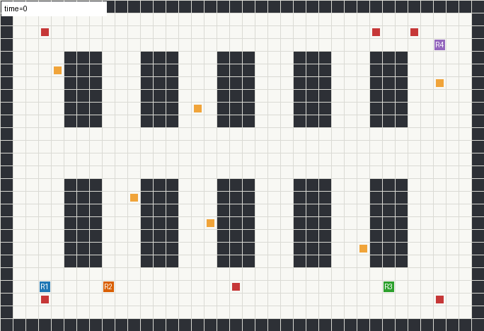

多机器人仓储协同调度与避碰汇报
1. 项目背景
nn 项目中已有不少机器人、无人车和导航相关模块。本项目 warehouse_robot_coordination 面向智能仓储场景，模拟多台移动机器人在货架通道中执行取货、搬运和投放任务的完整流程。
传统的单机器人路径规划只需要解决“从起点到终点怎么走”的问题；而智能仓储系统中通常有多台机器人同时运行，系统不仅要规划每台机器人的路径，还要决定任务由谁执行、不同机器人是否会在窄通道中相遇、是否会在同一时间占用同一格子，以及如何通过等待或重新调度避免碰撞。因此，本项目把问题从单一路径规划扩展到多机器人协同调度，更接近真实物流机器人和 AGV 调度系统中的工程需求。
项目采用二维栅格地图作为实验环境，将货架、墙体、通道、机器人起点、取货点和投放点统一抽象为可计算的数据结构。这样既可以保持项目轻量，便于在普通 Python 环境中直接运行，也能清晰展示多机器人调度中的关键算法环节。
2. 项目目标
本项目目标是做一个完整的多机器人协同调度演示模块，而不是单独实现某一个算法函数。它覆盖从场景建模到结果可视化的完整流程：
- 构建具有货架、通道和装卸区域的仓储地图。
- 定义多台机器人和多个 pickup-delivery 任务。
- 根据任务优先级和机器人当前位置进行任务分配。
- 使用 A* 为每段取货、投放路径进行规划。
- 将机器人路线展开为时间序列轨迹。
- 检测多机器人运行中的顶点冲突和边交换冲突。
- 通过插入等待动作实现时空避碰。
- 与单机器人顺序执行所有任务的基线方案进行对比。
- 输出图片、图表、GIF、JSON 和 CSV 文件，便于展示与复现实验。
通过这些功能，项目可以从“算法是否能跑”提升到“一个小型调度系统是否能完整展示输入、决策、执行和评价”。
3. 模块位置
src/warehouse_robot_coordination/
项目结构如下：
src/warehouse_robot_coordination/
├── main.py # 命令行入口，串联地图、规划、调度和可视化
├── warehouse.py # 仓库地图、机器人和任务定义
├── planner.py # A* 路径规划、任务分配、单机器人基线
├── scheduler.py # 时空冲突检测与等待避碰
├── visualization.py # 图片、图表和 GIF 生成
├── requirements.txt # 依赖说明
├── README.md # 项目说明
├── assets/ # 运行结果
└── tests/test_coordination.py
各文件之间的关系如下：warehouse.py 提供基础场景，planner.py 根据场景生成路线，scheduler.py 对路线进行时间维度避碰，visualization.py 将调度结果转化为图表和动图，main.py 负责把这些步骤组织成一次完整实验。
4. 场景建模
4.1 仓库地图
warehouse.py 构建了一个二维占据栅格地图：
0表示可通行区域。1表示货架或墙体。- 地图外圈设置墙体边界。
- 中间布置多组货架块。
- 横向和纵向通道用于机器人通行。
- 装卸区域位于地图边缘，模拟仓储系统中的出入库位置。
该设计使地图不是完全空旷的简单网格，而是包含窄通道和绕行路线的结构化仓储环境。窄通道会自然产生机器人相遇和拥堵问题，从而体现调度算法的必要性。
4.2 机器人定义
项目中定义了 4 台机器人：
R1, R2, R3, R4
每台机器人都有自己的初始位置和电量预算字段。当前版本主要使用机器人位置进行调度，电量字段保留为后续扩展接口，可进一步加入能耗计算、低电量回充和充电站调度。
4.3 任务定义
项目中定义了 6 个 pickup-delivery 任务：
T1, T2, T3, T4, T5, T6
每个任务包含：
pickup：取货点。dropoff：投放点。priority：任务优先级。
任务优先级会参与分配排序，使系统优先处理更重要的任务。这比随机分配任务更接近真实仓储中“紧急订单优先”的需求。
5. 核心算法流程
5.1 A* 路径规划
planner.py 中实现了 A* 路径规划。每个任务会被拆成两段路径：
- 机器人当前位置到取货点。
- 取货点到投放点。
A 使用曼哈顿距离作为启发式函数，适合上下左右移动的栅格地图。相比盲目搜索，A 会优先扩展更接近目标的区域，从而减少无效搜索。项目中所有路径都基于同一套地图邻居规则生成，保证机器人不会穿过货架或墙体。
5.2 优先级感知任务分配
任务分配不是简单平均分，而是综合考虑以下因素：
- 机器人当前位置到任务取货点的路径代价。
- 任务取货点到投放点的路径代价。
- 当前机器人已经承担的任务数量。
- 任务自身优先级。
系统先按任务优先级排序，再为每个任务计算各机器人执行该任务的代价，选择综合代价较小的机器人。这种方法虽然是贪心策略，但实现简单、可解释性强，适合课程项目展示，也为后续接入更复杂的优化算法留下接口。
5.3 单机器人基线方案
为了证明多机器人协同的价值，项目额外实现了单机器人基线方案：由第一台机器人按顺序完成所有任务。
这个基线不是最终方案，而是作为对照组，用来观察多机器人协同是否真正缩短整体完成时间。如果没有基线，仅展示多机器人路径很难说明优化效果；加入基线后，可以用数据说明协同调度的收益。
5.4 时空轨迹展开
路径规划得到的是空间路径，但多机器人系统还需要考虑时间。scheduler.py 将每台机器人的路径展开为按时间步排列的轨迹：
time 0 -> cell A
time 1 -> cell B
time 2 -> cell C
这样就可以检查不同机器人在同一时间是否进入同一个格子，或者是否在相邻时间内互换位置。
5.5 冲突检测
项目检测两类典型冲突：
- 顶点冲突：两台机器人在同一时间进入同一个格子。
- 边交换冲突：两台机器人在相邻时间步交换位置，可能发生迎面碰撞。
这两类冲突是多智能体路径规划中非常常见的问题。即使每台机器人自己的路径都是合法的，多机器人同时执行时仍然可能冲突，所以必须在时间维度上再次检查。
5.6 等待避碰调度
当检测到冲突后，系统会给其中一台机器人插入等待动作，让另一台机器人先通过冲突区域。等待动作不会改变地图和任务，只改变机器人到达某些位置的时间。
本次运行中，系统插入了 3 次等待动作，将冲突数量从 1 降低到 0。这个结果说明：仅靠空间路径规划不足以保证多机器人安全执行，加入时间调度后才能形成可执行路线。
6. 运行方法
进入模块目录：
cd src/warehouse_robot_coordination
python main.py
运行后会生成：
warehouse_task_map.png
assigned_routes.png
workload_balance.png
conflict_reduction.png
robot_timeline.png
warehouse_coordination.gif
metrics.json
robot_loads.csv
这些文件保存在：
src/warehouse_robot_coordination/assets/
其中 PNG 和 GIF 用于展示运行效果，JSON 和 CSV 用于保存实验指标，方便后续分析或复现实验。
7. 运行结果
7.1 仓库任务分布图
下图展示仓库地图、货架、机器人起点、取货点和投放点。

这张图说明项目的输入场景具有明确结构：机器人不是在空地图上随意移动，而是在货架和通道组成的仓储环境中完成任务。图中的机器人起点、取货点和投放点共同构成一次调度实验的输入。
7.2 多机器人路线图
下图展示任务分配后，每台机器人的完整行驶路线。

可以看到，不同机器人承担不同任务，路线分布在仓库不同区域。相比单机器人依次完成所有任务，多机器人方案能够并行执行任务，减少整体完成时间。
从工程角度看，这张图不仅展示路径规划结果，也展示任务分配结果：如果分配策略不合理，某些机器人路线会特别长，另一些机器人空闲；当前结果中多台机器人均参与了任务执行。
7.3 负载均衡对比图
下图比较多机器人计划路径、加入等待后的路径，以及单机器人完成全部任务的基线距离。

本次运行指标：
Robots: 4
Tasks: 6
Total planned distance: 176
Scheduled makespan: 64
Single robot baseline distance: 261
其中 scheduled_makespan 表示多机器人调度后最长执行时间，single_robot_baseline_distance 表示单机器人完成全部任务的总距离。可以看到，多机器人协同后的完成时间远低于单机器人基线，说明任务并行化带来了明显收益。
7.4 冲突消除图
下图展示调度前后的冲突数量变化。

本次运行中：
Conflicts before/after: 1 -> 0
Inserted waits: 3
这个结果说明：初始路线中确实存在多机器人时空冲突。调度器通过插入等待动作，使冲突数量降为 0。换句话说，项目不仅能规划路径，还能检查路径是否能被多机器人同时安全执行。
7.5 多机器人执行时间线
下图展示每台机器人调度后的执行时间线。

时间线图用于观察各机器人执行任务的持续时间和等待情况。它比单纯路线图多了时间维度，可以说明机器人不是无序同时移动，而是经过调度后按时间序列执行。
7.6 多机器人协同 GIF
下图展示多机器人在仓库中的协同运行过程。

GIF 中可以直观看到机器人在货架通道内移动，并按照调度结果执行任务。相比静态图片，动图更适合展示“时间调度”和“多机器人协同执行”的过程。
8. 运行指标
本次运行结果如下：
Warehouse robot coordination demo finished
Robots: 4 Tasks: 6
Total planned distance: 176
Scheduled makespan: 64
Single robot baseline distance: 261
Conflicts before/after: 1 -> 0
Inserted waits: 3
R1: T1, T2
R2: T3
R3: T4, T6
R4: T5
各机器人负载：
R1: 63 steps
R2: 40 steps
R3: 64 steps
R4: 12 steps
从结果可以看出，R1 和 R3 承担了较多任务，R2 承担中等任务量，R4 承担优先级较高但路线较短的任务。该结果体现了当前贪心任务分配策略的特点：优先考虑任务距离和优先级，同时通过负载惩罚避免任务过度集中。
9. 工程量说明
本模块包含：
- 5 个 Python 核心源码文件。
- 1 个测试文件。
- 1 个 README 项目说明。
- 1 个 requirements 依赖文件。
- 6 个可视化成果文件。
- 2 个指标文件。
- 1 个 GIF 动图。
- 1 个 MkDocs 汇报页面。
- 1 个演讲提纲页面。
核心源码按功能拆分为地图建模、路径规划、调度避碰、可视化输出和命令行入口。这样的结构比把所有逻辑写在一个脚本中更清晰，也更便于后续扩展。例如，如果要替换任务分配算法，只需要修改 planner.py；如果要替换冲突解决策略，只需要修改 scheduler.py；如果要改变输出图表，只需要修改 visualization.py。
10. 测试验证
已完成语法检查：
python -m py_compile main.py warehouse.py planner.py scheduler.py visualization.py tests/test_coordination.py
已运行模块测试：
warehouse_robot_coordination tests passed
测试覆盖内容包括：
- 仓库地图合法性。
- A* 是否能到达任务点。
- 任务是否全部分配且不重复。
- 多机器人 makespan 是否优于单机器人基线。
- 冲突调度后是否消除冲突。
- 顶点冲突检测是否有效。
这些测试保证项目不是只生成图片，而是对地图、算法、分配和调度逻辑进行了基本验证。
11. 项目意义
该模块面向智能物流与仓储机器人场景，可作为后续扩展的基础：
- 加入任务截止时间。
- 加入机器人电量与充电站调度。
- 引入 CBS 等多智能体路径规划算法。
- 接入 ROS、Gazebo、Webots 或真实 AGV 调度系统。
- 将静态任务扩展为实时订单流。
- 将等待避碰扩展为重新规划避碰。
从课程项目角度看，本项目覆盖了“建模、算法、调度、评估、可视化、测试”多个环节，能够展示一个小型工程系统的完整开发过程。
12. 小结
本项目完成了从仓储地图建模、任务分配、路径规划、冲突检测、避碰调度到可视化展示的完整流程。
相比静态单机器人路径规划，它更强调多机器人协同和工程化调度，更符合智能仓储场景中的实际问题。项目最终通过图表和 GIF 展示了多机器人系统如何分配任务、规划路线、检测冲突、插入等待并安全完成任务。